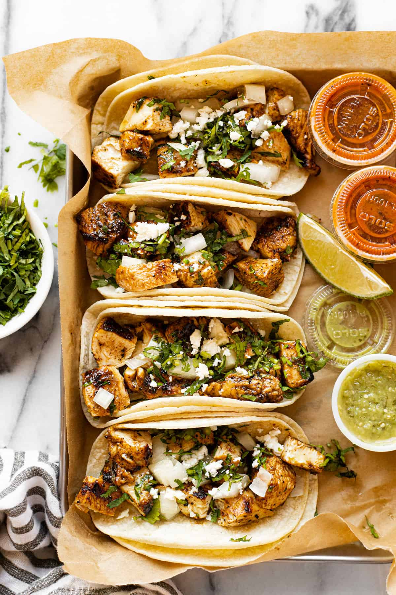

Street-Tacos

Description
Street tacos are a culinary delight that encapsulates the essence of authentic Mexican street food. These handheld treasures consist of small, soft corn tortillas generously filled with a medley of flavorful ingredients. The fillings often feature succulent and well-seasoned meats such as grilled carne asada, tender carnitas, or spicy chorizo. Topped with fresh and vibrant garnishes like diced onions, cilantro, and a squeeze of lime, street tacos achieve a harmonious balance of savory, tangy, and herbal notes. What sets them apart is their simplicity, portability, and the ability to capture the rich, diverse flavors of Mexican cuisine in a single, satisfying bite. Street tacos are a testament to the artistry of street vendors who have perfected the craft of delivering bold and delicious flavors to eager food enthusiasts on bustling corners and vibrant marketplaces.
ingredients
- Preferred meat/tofu/beans
- Diced Onions
- Chopped Cilantro
- Lime Wedges
- Salsa Verde (green salsa)
- Salsa Roja (red salsa)
- Pico de Gallo (fresh tomato, onion, cilantro, and chili salsa)
- Radishes (sliced)
- Avocado or Guacamole
- Sour Cream
Steps
- Marinate or season the chosen meat (e.g., carne asada, carnitas, chorizo) with your preferred spices and flavors.
- Grill, pan-fry, or cook the meat according to its specific requirements until it's tender, flavorful, and cooked through.
- Heat the corn tortillas on a hot griddle or skillet until they are warm and pliable. This enhances their flavor and makes them easier to fold.
- Place a portion of the cooked meat onto each warm tortilla.
- Sprinkle diced onions and chopped cilantro over the meat on each taco.
- Squeeze fresh lime juice over the tacos to add a burst of citrusy flavor.
- Add your preferred salsa, whether it's salsa verde, salsa roja, or pico de gallo, to enhance the tacos with a zesty kick.
- If desired, add additional toppings such as sliced radishes, guacamole, or sour cream to customize the tacos further.
- Street tacos are best enjoyed fresh and hot. Serve them immediately, and let everyone customize their tacos with additional toppings as they prefer.